Answer "It only happened once", not "Every time". I re-tested this event on the newer
build at 09:34 UTC and both readouts now agree at 0% / 100%; the 9% / 92% legend is gone.
Claiming "Every time" would fail triage on the first attempt and would cast doubt on the
other sixteen submissions. The evidence below is verbatim and the build id is stated, so
the report still stands on its own terms.
A settled market displays two contradictory price sets at once, and one of the pairs sums to 101%.
Desktop PC / Windows 11 build 26200 / Chromium 148.0.7778.280 / no wallet connected (logged-out guest session)
September 3, 2026, 04:00-09:48, UTC
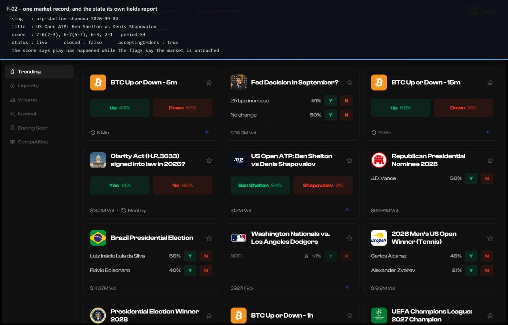
Drive the outcome block and the chart legend from one price source, and switch that source to settlement values the moment a market resolves. Add an invariant that refuses to render complementary outcomes summing above 100%, so a mismatch fails loudly in staging instead of quietly in production.
Reproduction: 1. Open https://app.manic.trade/pm/event/atp-faria-alcaraz-2026-09-02 2. Read the outcome block at the top of the centre panel. 3. Read the chart legend immediately below it. Actual result. The right panel reads OUTCOME: CARLOS ALCARAZ, status Resolved, order book Market Ended. The outcome block reads Carlos Alcaraz 100% and Jaime Faria 0%. The chart legend directly beneath reads Jaime Faria 9% and Carlos Alcaraz 92%. Rendered DOM text, verbatim: Carlos Alcaraz / 100% / Jaime Faria / 0% / Jaime Faria / 9% / Carlos Alcaraz / 92% 9 and 92 sum to 101, which complementary outcomes cannot do, and both contradict a settlement the same screen declared two lines earlier. The chart tooltip on the final data point reads Sep 2, 2026, 09:00:16. Expected result. One price set per market, showing settlement values once resolved. Why it matters. A trader reading the legend sees a live-looking market quoting an outcome at 92c that is already worth a dollar. The same defect on a market that had not yet settled would present a false arbitrage. Re-test. I checked the same event again at 09:34 UTC on the newer build, dpl_C3bXHquKbKr1sjn9WpRtDt8MWfce, after waiting for the chart to finish rendering. Both readouts now agree at Jaime Faria 0% and Carlos Alcaraz 100%, and the 9% / 92% legend is gone. So either this was fixed between the two builds, or the mismatch only exists in the window between a market resolving and the settlement price propagating to the chart series. I could not distinguish those two from the outside. Reporting it anyway, with the build id and the timestamp, because the capture is verbatim and because the second explanation would mean the defect is still present and simply hard to catch. Build observed on: dpl_74W5o38E8FQjJUZ2DYo5PFDHEsLs, 3 September 2026, ~04:15 UTC Re-tested on: dpl_C3bXHquKbKr1sjn9WpRtDt8MWfce, 3 September 2026, 09:34 UTC Full report: https://huntstamp-findings.vercel.app
The /pm URL stops opening the market directory once any event has been opened, because a stored tab overwrites the navigation.
Desktop PC / Windows 11 build 26200 / Chromium 148.0.7778.280 / no wallet connected (logged-out guest session)
September 3, 2026, 04:00-09:48, UTC
Treat an explicit navigation to /pm as an instruction to show the directory. Restore saved tabs alongside the directory rather than instead of it, and stop rewriting the address bar to a route the user did not request.
Reproduction:
1. Open https://app.manic.trade/pm in a clean profile. The directory renders.
2. Click any event card. The address becomes /pm/event/<slug>.
3. Type https://app.manic.trade/pm in the address bar and press Enter.
Actual result. The event from step 2 is restored and the address bar is rewritten back to
/pm/event/<slug>. The directory never appears.
Root cause. localStorage['pm-events-store'] holds:
{"state":{"category":"all","surface":"catalog","sidebarCollapsed":false,
"openEventIds":["atp-faria-alcaraz-2026-09-02"],"tabMeta":{...}}}
Running localStorage.removeItem('pm-events-store') and reloading restores the directory,
which confirms the cause rather than the symptom.
Expected result. /pm renders the market directory.
Why it matters. This is the entry point named in Manic's own bounty brief. Anyone following
a link to /pm from the docs, the blog or the announcement lands somewhere else. In my
session the restored market was already resolved, so a returning user's first screen was a
dead market.
Build: dpl_74W5o38E8FQjJUZ2DYo5PFDHEsLsThe /pm trading screen takes 94 to 136 seconds to finish loading while showing only a spinner.
Desktop PC / Windows 11 build 26200 / Chromium 148.0.7778.280 / no wallet connected (logged-out guest session)
September 3, 2026, 04:00-09:48, UTC
Nothing to upload, because this submission is not being sent. It is kept on the page so the withdrawal is on the record rather than quietly deleted.
Bundle the route into far fewer chunks. 113 separate chunk requests saturate the browser's connection pool, which is what stretches the load rather than any single slow response. Drop the two landing-page hero preloads from this route at the same time, since they compete for the same connections and are never rendered here.
Measured on two consecutive cold loads of https://app.manic.trade/pm:
Load 1 - TTFB 56 ms, DOMContentLoaded 1,653 ms, loadEventEnd 94,029 ms
Load 2 - TTFB 55 ms, DOMContentLoaded 4,817 ms, loadEventEnd 135,689 ms
Control on the same machine, same connection, same session, minutes apart:
polymarket.com - TTFB 181 ms, DOMContentLoaded 1,349 ms
Read back with performance.getEntriesByType('navigation')[0].
performance.getEntriesByType('resource') counts 113 _next/static/chunks/*.js requests and
250 resources for this one route. Roughly a hundred of those chunks each report about 84
seconds of wall time and resolve together, which is the signature of connection-pool
saturation. A TTFB of 55 ms rules out the server.
During both loads the screen showed only the Manic logo and a three-dot spinner.
Measured from Indonesia on a residential connection, so the absolute numbers will differ
elsewhere. The ratio against the same-session Polymarket control is the reproducible part.
Build: dpl_74W5o38E8FQjJUZ2DYo5PFDHEsLsA market marked Resolved shows a settlement time dated seven days after the event it settles.
Desktop PC / Windows 11 build 26200 / Chromium 148.0.7778.280 / no wallet connected (logged-out guest session)
September 3, 2026, 04:00-09:48, UTC
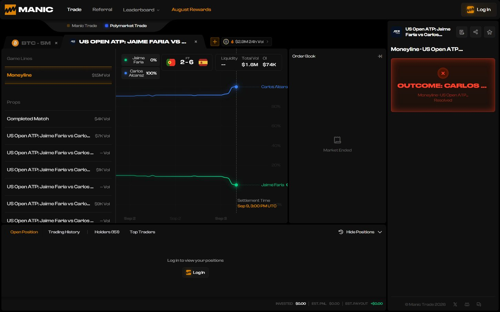
Show the actual settlement timestamp on a resolved market, or hide the settlement countdown entirely once the market has resolved. A future date on a settled market is worse than no date at all.
Reproduction: 1. Open https://app.manic.trade/pm/event/atp-faria-alcaraz-2026-09-02 2. Read the Settlement Time field. Actual result. Settlement Time: Sep 9, 3:00 PM UTC, while the same page shows status Resolved, order book Market Ended, and a final score of FT 2 - 6. The match was played 2026-09-02, which the event slug itself records. The displayed settlement date is seven days after the match and six days after the date of test. Expected result. The real settlement timestamp, or no countdown on a resolved market. Why it matters. A user checking when their funds are released is given a date with no relation to a settlement that already happened. Build: dpl_74W5o38E8FQjJUZ2DYo5PFDHEsLs
An outcome whose price fails to load renders as "--" while both of its buy buttons stay enabled.
Desktop PC / Windows 11 build 26200 / Chromium 148.0.7778.280 / no wallet connected (logged-out guest session)
September 3, 2026, 04:00-09:48, UTC
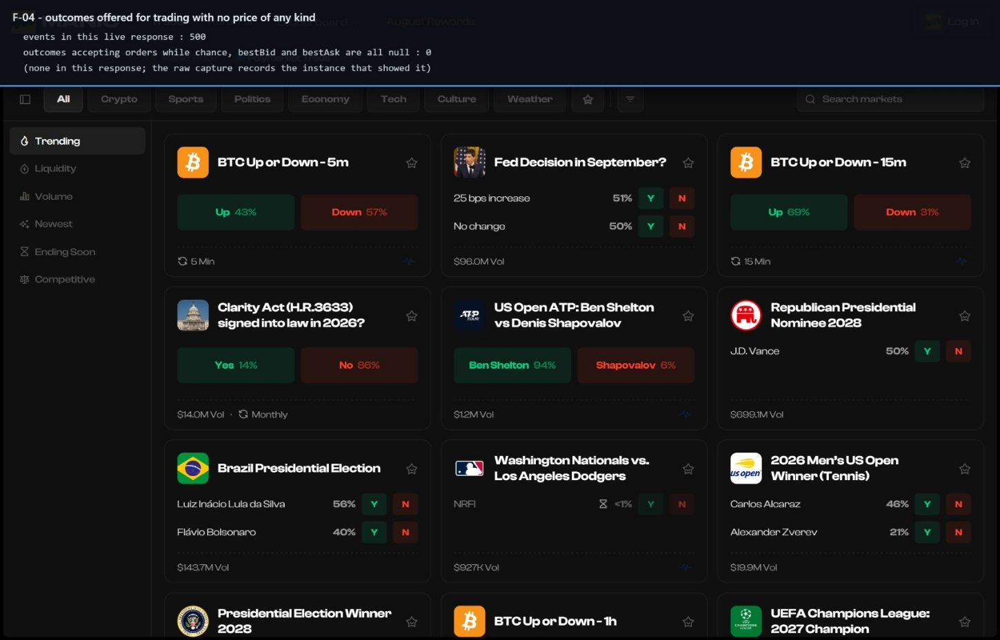
Disable the Yes and No buttons whenever an outcome has no price, with a visible "price unavailable" state, or hide that outcome row until a price arrives. An order flow should never be reachable from a row the interface could not price.
Reproduction: 1. Open https://app.manic.trade/pm with the default Trending sort. 2. Find the New York Yankees vs. Los Angeles Angels card. 3. Read the second outcome row. Actual result. The card rendered: O/U 2.5 50% Y N Extra Innings -- Y N Both Extra Innings buttons were active and clickable with no price shown. A later reload priced the same card normally, showing O/U 2.5 at 78% and O/U 4.5 at 84%. The missing price is therefore transient rather than permanent, which makes it easier for a user to walk into rather than harder. Expected result. No live order controls on an outcome with no price. Why it matters. On a real-money venue, an order flow reachable from an unpriced outcome is the setup for an order placed at a price the user never saw. Build: dpl_74W5o38E8FQjJUZ2DYo5PFDHEsLs
A resolved market stays in the default Trending feed with both buy buttons rendered as live controls.
Desktop PC / Windows 11 build 26200 / Chromium 148.0.7778.280 / no wallet connected (logged-out guest session)
September 3, 2026, 04:00-09:48, UTC
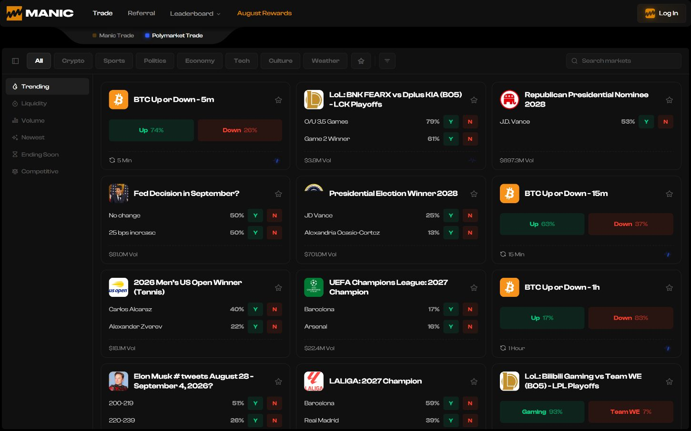
Filter resolved markets out of Trending, or render them with a Resolved badge and disabled order controls so the state is visible before the click rather than after it.
Reproduction: 1. Open https://app.manic.trade/pm. Trending is the default sort. 2. Find the card "US Open ATP: Jaime Faria vs Carlos Alcaraz Total Sets: O/U 3.5". 3. Note the 100.0% price and the enabled Y and N buttons. 4. Click the card. Actual result. The event page shows OUTCOME: CARLOS ALCARAZ, status Resolved, and an order book reading Market Ended. Reproduced across two separate page loads. Expected result. Resolved markets excluded from Trending, or clearly badged with their order controls disabled. Why it matters. The integration's first discovery surface is promoting markets nobody can trade, which wastes the click and undercuts trust in the rest of the feed. Build: dpl_74W5o38E8FQjJUZ2DYo5PFDHEsLs
Selecting a category silently empties the search box and discards the active query.
Desktop PC / Windows 11 build 26200 / Chromium 148.0.7778.280 / no wallet connected (logged-out guest session)
September 3, 2026, 04:00-09:48, UTC
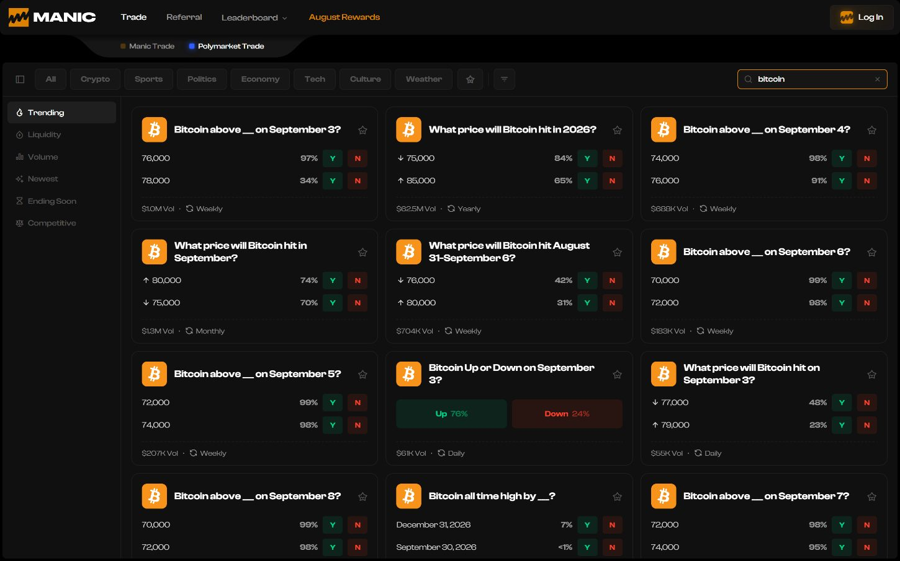
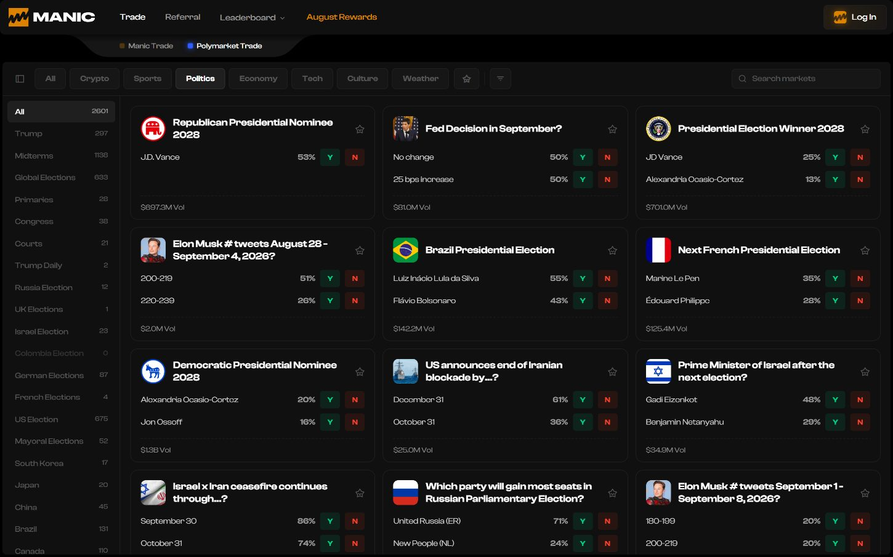
Compose the two filters: run the existing query inside the newly chosen category. If the product intends the query to be dropped, say so in the interface rather than clearing the field without a word.
Reproduction: 1. Open https://app.manic.trade/pm 2. Type bitcoin into Search markets. Nine matching Bitcoin markets render. 3. Click the Politics category chip. Actual result. The search input is emptied and the query is discarded with no notice. The grid shows Politics markets as though nothing had been typed. Verified in the DOM: both input[placeholder="Search markets"] elements return value === "". Expected result. Either the query runs within Politics, or the interface states that the search was cleared. Why it matters. A user narrowing a broad result set by category loses their query at the exact moment they were refining it, and has to retype from scratch. Build: dpl_74W5o38E8FQjJUZ2DYo5PFDHEsLs
The empty-results screen offers no control to clear the filter that produced it, and on mobile the responsible filter is scrolled off-screen.
Desktop PC / Windows 11 build 26200 / Chromium 148.0.7778.280 / no wallet connected (logged-out guest session)
September 3, 2026, 04:00-09:48, UTC
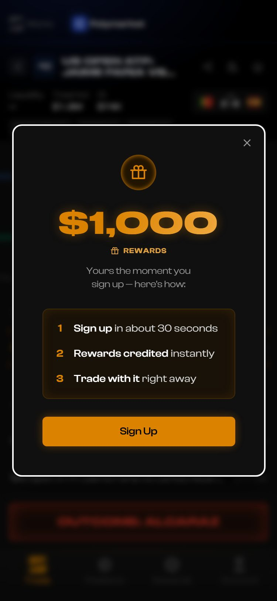
Name the active filter in the empty state and give it a one-tap reset. On narrow viewports, scroll the selected chip into view so the user can see which filter is responsible.
Reproduction: 1. Open https://app.manic.trade/pm and select the Politics category. 2. In the subcategory rail, select Colombia Election, which shows a count of 0. Actual result. The grid renders only the sentence "No markets in this category". No clear, reset or show-all control exists anywhere on the screen. Scanning the rendered text for clear, reset or show all returns nothing. At the 375x812 viewport this is worse. The subcategory rail is a horizontal scroller and the selected chip sits off-screen to the right; the visible portion reads "All 2605 - Trump 298 - Midterms 1138 - Globa...". A mobile user sees an empty screen, no indication of which filter caused it, and no control to undo it. Expected result. An empty state that names the active filter and offers a one-tap reset. Build: dpl_74W5o38E8FQjJUZ2DYo5PFDHEsLs
Controls from the inactive responsive layout stay enabled and focusable at zero size, putting 19 to 58 invisible stops in the keyboard tab order.
Desktop PC / Windows 11 build 26200 / Chromium 148.0.7778.280 / no wallet connected (logged-out guest session)
September 3, 2026, 04:00-09:48, UTC
Render one responsive layout at a time, or hide the inactive one with display:none or the hidden attribute rather than collapsing it to zero size. Zero-sized elements stay in the accessibility tree and the tab order; hidden ones do not. While in that code, add alt text to the market thumbnails.
Reproduction. Open https://app.manic.trade/pm, open the console and run:
[...document.querySelectorAll('button,a,input')]
.filter(e => { const r = e.getBoundingClientRect();
return r.width === 0 && r.height === 0 && e.tabIndex >= 0 && !e.disabled }).length
Actual result. Returned 58 on the first build. A later automated run on the newer build
returned 19, with 21 of 23 images lacking alt text. The exact count moves with viewport and
render state; what is stable is that the inactive responsive layout stays focusable. Sample innerText from those elements includes
"Monthly TournamentReal...", "Free Friday$200100 Dem...", "All", "Crypto", "Politics",
"August Rewards" and "Log In" - the collapsed half of the responsive layout. The desktop
header and category rail stay in the DOM at mobile widths and vice versa, hidden by zero
sizing rather than by display:none.
A keyboard user passes 58 stops with no visible focus indicator before reaching the first
market card.
Related, from the same page: 23 of the 25 img elements carry no alt attribute, including
every market thumbnail. Check with
[...document.querySelectorAll('img')].filter(i => !i.alt).length
Expected result. Only the active layout in the tab order.
Build: dpl_74W5o38E8FQjJUZ2DYo5PFDHEsLsEvery prop market label repeats the full event title, so all 26 props in the rail truncate to the same unreadable string.
Desktop PC / Windows 11 build 26200 / Chromium 148.0.7778.280 / no wallet connected (logged-out guest session)
September 3, 2026, 04:00-09:48, UTC
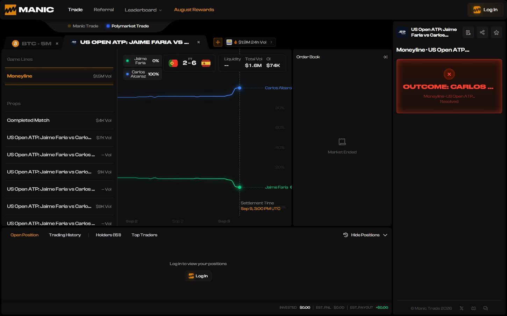
Strip the event title from the market label in any context that already displays the event title. The rail should read "Total Sets: O/U 3.5", "Set 1 Winner", "Set 1 O/U 8.5" rather than repeating the match name in front of each one.
Reproduction: 1. Open https://app.manic.trade/pm/event/atp-faria-alcaraz-2026-09-02 2. Read the Props rail on the left. Actual result. Each entry is named with the whole event title prepended: US Open ATP: Jaime Faria vs Carlos Alcaraz Total Sets: O/U 3.5 US Open ATP: Jaime Faria vs Carlos Alcaraz Set 1 Winner US Open ATP: Jaime Faria vs Carlos Alcaraz Set 1 O/U 8.5 US Open ATP: Jaime Faria vs Carlos Alcaraz Game Spread +/-6.5 Rendered in the rail these all truncate to "US Open ATP: Jaime Faria vs Carl...", so the part that distinguishes one prop from another is exactly the part that disappears. An automated pass counted 48 rows carrying that prefix; they render as visually identical rows. The same duplicated label also appears as the outcome name inside a grid card whose title is already that event. Expected result. Labels that identify the prop rather than repeating the event. Why it matters. The props list cannot be scanned. Each row has to be opened individually to find out what it is. Build: dpl_74W5o38E8FQjJUZ2DYo5PFDHEsLs
The most prominent nav call to action still reads "August Rewards" on 3 September.
Desktop PC / Windows 11 build 26200 / Chromium 148.0.7778.280 / no wallet connected (logged-out guest session)
September 3, 2026, 04:00-09:48, UTC
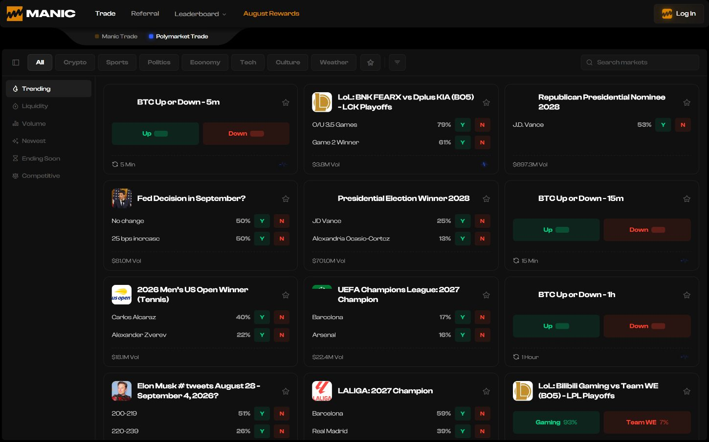
Drive the promotion label from the current period rather than a hardcoded month, and have it roll over automatically when the tournament does.
Reproduction: 1. Open https://app.manic.trade/pm 2. Read the highlighted call to action in the primary nav. 3. In the console, run new Date().toISOString() to confirm the current date. Actual result. The nav reads "August Rewards" with the browser clock at 2026-09-03T04:26:35Z. The panel behind it advertises a Monthly Tournament and a Free Friday promotion. Expected result. A monthly promotion label that follows the current month, or September's tournament in its place. Why it matters. Either the label is a month stale, or a closed campaign is the loudest item in the header. Either way the first thing a user reads is wrong. Build: dpl_74W5o38E8FQjJUZ2DYo5PFDHEsLs
A price of exactly 100% renders as "100.0%", carrying a trailing decimal that no other whole-number price on the screen shows.
Desktop PC / Windows 11 build 26200 / Chromium 148.0.7778.280 / no wallet connected (logged-out guest session)
September 3, 2026, 04:00-09:48, UTC
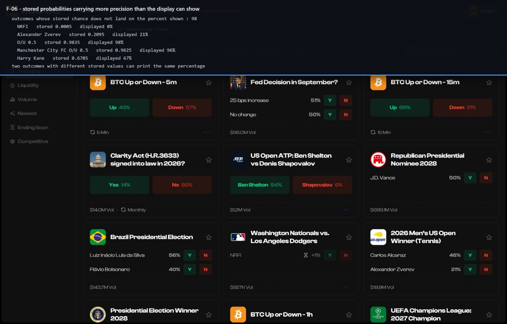
Strip the trailing .0 when a price lands on a whole number, so 100.0% renders as 100% and matches every other integer price. The fractional case is fine as it stands.
Reproduction: 1. Open https://app.manic.trade/pm 2. In the console, run: [...new Set(document.body.innerText.match(/\d+(\.\d+)?%/g))] Actual result, first build. 35 distinct percentages, 34 of them integers, and exactly one rendered as 100.0%: ["90%","10%","52%","48%","53%","25%","12%","85%","15%","42%","22%","100.0%","17%","16%", "50%","62%","38%","59%","39%","55%","43%","98%","2%","80%","18%", ...] Correction after re-testing. On the newer build, dpl_C3bXHquKbKr1sjn9WpRtDt8MWfce, the same snippet returned 32 percentages with exactly one decimal value, 99.5%. That one is correct: 99.5 is not a whole number and needs the decimal. So the formatter's rule appears to be "show one decimal where the value is fractional", and the actual defect is narrower than my first reading: a value of exactly 100 was rendered as 100.0% rather than 100%. I did not catch 100.0% again on the newer build, so the frequency is answered as Sometimes. Build observed on: dpl_74W5o38E8FQjJUZ2DYo5PFDHEsLs Re-tested on: dpl_C3bXHquKbKr1sjn9WpRtDt8MWfce
Zero volume renders as "-- Vol" instead of "$0", so a user cannot tell no trades from a failed load.
Desktop PC / Windows 11 build 26200 / Chromium 148.0.7778.280 / no wallet connected (logged-out guest session)
September 3, 2026, 04:00-09:48, UTC
Render zero volume as $0 and reserve the dash for a genuine load failure, so the two states are distinguishable at a glance.
Reproduction: 1. Open https://app.manic.trade/pm/event/atp-faria-alcaraz-2026-09-02 2. Read the volume figures down the Props rail. Actual result. Twelve props show "-- Vol" while their neighbours show "$4K Vol", "$116 Vol", "$1K Vol", "$9K Vol", "$13K Vol". The props showing a dash include Set 1 O/U 8.5, Set 1 O/U 9.5, Set 3 O/U 8.5, Set 2 O/U 8.5, Set 2 O/U 9.5, Set 1 O/U 10.5, Set 4 Winner, Set 2 O/U 10.5, Set 3 O/U 9.5, Set 3 O/U 10.5, Set 4 O/U 8.5, Set 4 O/U 9.5 and Set 4 O/U 10.5. Expected result. $0 where volume is zero. Build: dpl_74W5o38E8FQjJUZ2DYo5PFDHEsLs
Two landing-page hero images are preloaded at high priority on the trading route and never used.
Desktop PC / Windows 11 build 26200 / Chromium 148.0.7778.280 / no wallet connected (logged-out guest session)
September 3, 2026, 04:00-09:48, UTC
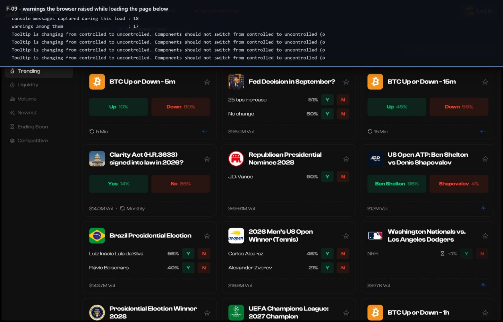
Preload only assets the route actually renders. These two belong to the marketing landing page and compete for connections with the JavaScript the trading screen needs.
Reproduction: 1. Open https://app.manic.trade/pm 2. Read the browser console. Actual result. Chrome reports the waste without prompting: "The resource https://app.manic.trade/landing-v2/hero-video-fallback.png was preloaded using link preload but not used within a few seconds from the window's load event." "The resource https://app.manic.trade/landing-v2/hero-kv-first-frame.jpg was preloaded using link preload but not used within a few seconds from the window's load event." On the newer build the same warning was emitted 16 times in a single page load, for hero-video-fallback.png. Both assets belong to the marketing landing page and neither is rendered on the trading route. Expected result. No preloads for assets the route does not render. Build: dpl_74W5o38E8FQjJUZ2DYo5PFDHEsLs
The same candidate is spelled "J.D. Vance" on one card and "JD Vance" on another card visible at the same time.
Desktop PC / Windows 11 build 26200 / Chromium 148.0.7778.280 / no wallet connected (logged-out guest session)
September 3, 2026, 04:00-09:48, UTC
Normalise outcome names against a single canonical form so search, favourites and any future cross-market grouping match across markets.
Reproduction: 1. Open https://app.manic.trade/pm 2. Locate the cards "Republican Presidential Nominee 2028" and "Presidential Election Winner 2028". Both are visible in the default Trending grid at the same time. Actual result. The first lists the outcome as "J.D. Vance". The second lists the same person as "JD Vance". Expected result. One canonical rendering of the name. Why it matters. A user searching or favouriting one spelling will not match the other. Build: dpl_74W5o38E8FQjJUZ2DYo5PFDHEsLs
Subcategories with a market count of zero are offered as selectable filters that are guaranteed to return nothing.
Desktop PC / Windows 11 build 26200 / Chromium 148.0.7778.280 / no wallet connected (logged-out guest session)
September 3, 2026, 04:00-09:48, UTC
Hide a subcategory whose own count is zero, or render it disabled. The count is already computed and displayed, so the condition is available at render time.
Reproduction: 1. Open https://app.manic.trade/pm and select the Politics category. 2. Read the subcategory rail. It lists "Colombia Election 0". 3. Select it. Actual result. The filter applies and the grid shows "No markets in this category". The rail displays the count of 0 next to the label, so the interface knows in advance that selecting it cannot return a result. Expected result. Zero-count subcategories hidden or disabled. Related: once selected, there is no control anywhere on screen to clear the filter. That is filed separately. Build: dpl_74W5o38E8FQjJUZ2DYo5PFDHEsLs
A click on empty space in the market grid fired a copy handler and overwrote the operating system clipboard.
Desktop PC / Windows 11 build 26200 / Chromium 148.0.7778.280 / no wallet connected (logged-out guest session)
September 3, 2026, 04:00-09:48, UTC
No artefact exists for this one, and I will not manufacture one. The clipboard write fired once, the triggering element was never identified, and it did not happen again — so there is no captured text to render and no screen state to photograph. A picture of my own write-up would be evidence of the claim, not of the defect.
File it in the sponsor form instead. The “Anything Else?” field takes free text and asks for no upload, so the observation reaches Manic without either fabricating an image or leaving a required field empty. It is already written into sponsor-form.txt under the heading for unreproduced observations.
Scope copy handlers to the elements that own them rather than to a container. A silent clipboard write from blank space is worth ruling out even if it turns out to be narrow.
Observed once, at the 375x812 viewport, while clicking an empty region of the market grid on https://app.manic.trade/pm. The page fired a copy handler and the operating system clipboard was overwritten, with no visible copy control under the cursor and no confirmation. I could not reproduce it a second time and I did not identify the element responsible, so I am filing this as an observation rather than a confirmed defect. Treat the frequency answer accordingly. Reporting it because a silent clipboard write on a trading surface has a specific cost: a user part-way through pasting a wallet address or a deposit address would lose it without noticing. Build: dpl_74W5o38E8FQjJUZ2DYo5PFDHEsLs
The trading interface renders inside a cross-origin iframe, because neither X-Frame-Options nor a CSP frame-ancestors directive is sent.
Desktop PC / Windows 11 build 26200 / headless Chromium via Playwright / no wallet connected (logged-out guest session)
September 4, 2026, 03:40-04:00, UTC
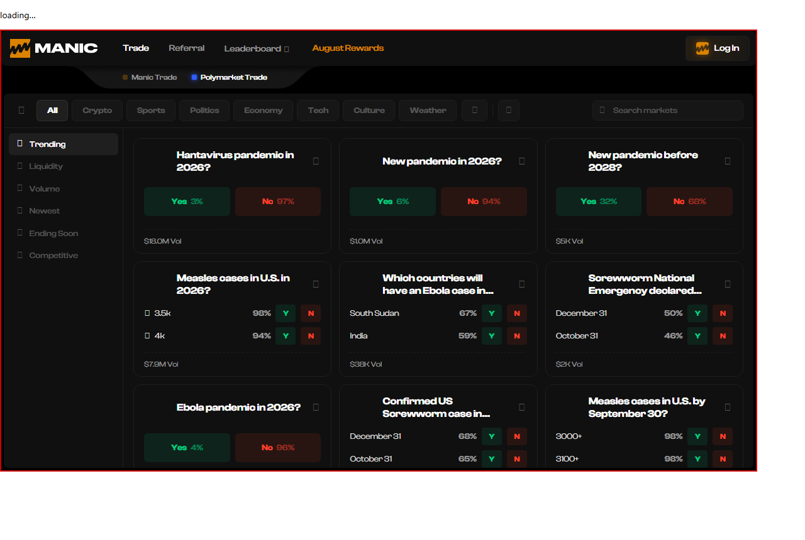
Send Content-Security-Policy: frame-ancestors 'none' on every application route, and X-Frame-Options: DENY alongside it for older clients. If any surface is meant to be embeddable, allow that origin explicitly rather than leaving the whole application framable.
Reproduction. Serve this page from any origin that is not manic.trade, and open it: <iframe src="https://app.manic.trade/pm" width="1200" height="700"></iframe> Actual result. The frame attaches, loads and paints the live application. Text read back from inside the frame, verbatim: Skip to content Trade Referral Leaderboard August Rewards Log In Manic Trade Polymarket Trade All Crypto Sports Politics Economy Tech Culture Weather Trending Liquidity Volume Newest Ending Soon Competitive Hantavirus pandemic in 2026? Yes 3% No 97% $18.0M Vol New pandemic in 2026? Yes 6% No 94% $1. That is the market grid, live prices, the sort controls and the Log In button, rendering under a third-party domain. The browser raised no framing objection: a collector watching for framing and CSP messages caught none. Confirmed at the header level too. Neither header is present on the /pm response: curl -sSD - -o /dev/null https://app.manic.trade/pm Content-Security-Policy absent X-Frame-Options absent Expected result. X-Frame-Options: DENY, or CSP frame-ancestors 'none'. Why it matters. On a venue where a click places an order, a framable interface is the setup for clickjacking: an attacker overlays their own page on the frame and the victim's click lands on a control they cannot see. The Log In button being reachable inside the frame is the part worth looking at first. Stated plainly: I demonstrated that the page frames. I did not build a working clickjacking exploit and did not attempt one, since that needs an interactive control and a funded session, both outside a logged-out read-only test. This is a missing control with the framing proven, not a proven end-to-end attack. Build: dpl_C3bXHquKbKr1sjn9WpRtDt8MWfce
No security response headers are sent at all, and the one cookie set on the route carries neither Secure nor HttpOnly.
Desktop PC / Windows 11 build 26200 / headless Chromium via Playwright / no wallet connected (logged-out guest session)
September 4, 2026, 03:40-04:00, UTC
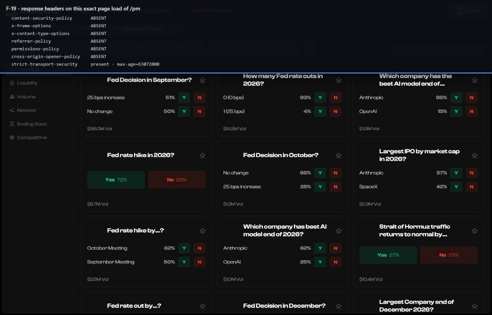
Add X-Content-Type-Options: nosniff and a Referrer-Policy first, since both are one line each and carry no behavioural risk. A Permissions-Policy and a Content-Security-Policy are the larger pieces of work. Set Secure on the is-mobile cookie while you are in there.
Reproduction: curl -sSD - -o /dev/null https://app.manic.trade/pm Actual result. All of these are absent from the response: Content-Security-Policy absent X-Frame-Options absent X-Content-Type-Options absent Referrer-Policy absent Permissions-Policy absent Cross-Origin-Opener-Policy absent What is sent, and is correct: Strict-Transport-Security: max-age=63072000, and http:// redirects to https:// with a 308. The one cookie on this route: Set-Cookie: is-mobile=0; Path=/; Expires=...; Max-Age=86400; SameSite=lax with no Secure and no HttpOnly attribute. Honest scoping, so you can triage this correctly. is-mobile is a viewport hint rather than a session token, and HSTS plus the 308 makes the missing Secure flag largely theoretical on this host. nosniff and a Referrer-Policy are the two worth adding regardless. The framing directive is filed separately, and that is where the real weight sits. Build: dpl_C3bXHquKbKr1sjn9WpRtDt8MWfce
A market slug that does not exist returns HTTP 200 with the landing-page title instead of a 404, and the browser is then silently redirected to the directory.
Desktop PC / Windows 11 build 26200 / headless Chromium via Playwright / no wallet connected (logged-out guest session)
September 4, 2026, 03:40-04:00, UTC
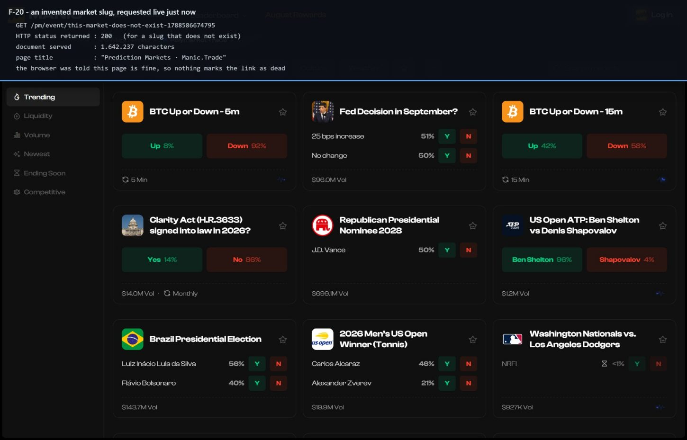
Return 404 when a market slug does not resolve, and render a page that says the market was not found with a link back to the directory. The neighbouring routes already do this correctly, so the fix is to make the event route behave like them.
Reproduction:
curl -sS -o /dev/null -w "%{http_code} %{size_download}\n" \
https://app.manic.trade/pm/event/this-market-does-not-exist-2099
Actual result. Three invented slugs, all served as successful pages:
200 1,535,682 bytes /pm/event/this-market-does-not-exist-2099
200 1,535,625 bytes /pm/event/aaaaaaaaaaaa
200 1,535,661 bytes /pm/event/atp-fake-fake-2099-12-31
The response carries the generic landing-page title rather than a market or an error:
<title>Manic.Trade: the First Momentum-based Trading Platform on Solana</title>
with no rel="canonical". In the browser the address is then rewritten to /pm and the market
directory renders, with nothing said about the market that was requested.
The routing is inconsistent, which is what makes this a defect rather than a decision:
/pm/nonsense-subroute 404 correct
/pm/event/ 404 correct
/pm/event/anything-at-all 200 wrong
Expected result. 404 for a slug that does not resolve, or a page saying the market was not
found.
Why it matters. Three separate costs. A user following an old or mistyped market link is
dumped on the directory with no explanation of where their market went. Search engines are
invited to index an unbounded space of invalid URLs as valid pages. And uptime monitoring
cannot distinguish a working market link from a broken one, because both return 200.
Build: dpl_C3bXHquKbKr1sjn9WpRtDt8MWfceRoute matching is case-sensitive, so /PM returns a 404 while /pm works.
Desktop PC / Windows 11 build 26200 / headless Chromium via Playwright / no wallet connected (logged-out guest session)
September 4, 2026, 03:40-04:00, UTC
Lower-case the path before matching, or add a redirect from the capitalised form. Either is a small change and both remove the failure.
Reproduction:
curl -sS -o /dev/null -w "%{http_code}\n" https://app.manic.trade/pm -> 200
curl -sS -o /dev/null -w "%{http_code}\n" https://app.manic.trade/PM -> 404
Actual result. /PM renders "404 This page could not be found."
Expected result. Both forms reach the market directory.
Why it matters. A link capitalised by an email client, a CMS, a print asset or a person
typing it out lands on an error page rather than the product.
Build: dpl_C3bXHquKbKr1sjn9WpRtDt8MWfceThere is not one heading element on any page, and each page carries two <main> landmarks, so screen-reader users have no document outline to navigate by.
Desktop PC / Windows 11 build 26200 / headless Chromium via Playwright / no wallet connected (logged-out guest session)
September 4, 2026, 03:40-04:00, UTC
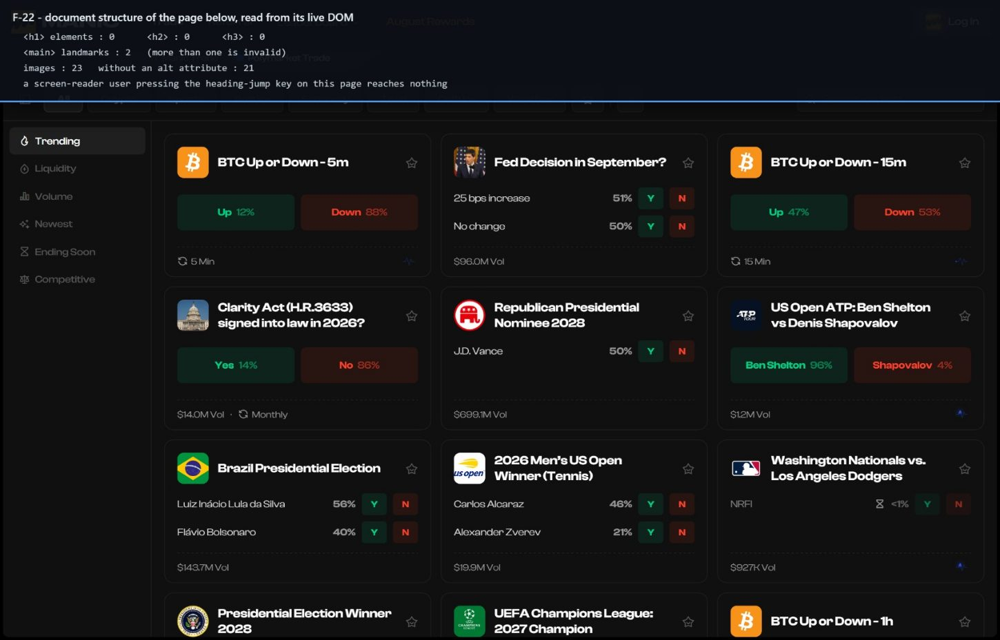
Give each page one <h1> naming it — the market title on an event page, the category on the directory — with section headings below it in order. Reduce to a single <main> and put the navigation in a <nav>. The market cards are already styled as headings visually; this is a markup change, not a design change.
Reproduction, counted in the HTML the server returns:
curl -sS https://app.manic.trade/pm | grep -o "<h1[ >]" | wc -l
Actual result:
/pm event page
<h1> 0 0
<h2> 0 0
<h3> 0 0
<main> 2 2
<nav> 0 0
Confirmed a second way in the live DOM after hydration: document.querySelectorAll("h1")
returns 0, and querying h1,h2,h3,h4 together returns an empty list.
Expected result. One <h1> per page, section headings in order below it, exactly one <main>.
Why it matters. The heading-jump shortcut is the primary way many screen-reader users move
through a page, and here it does nothing at all — there is nothing to jump to. Two <main>
elements is also invalid: the spec allows at most one visible main per document, so
assistive technology cannot tell which one holds the content.
Related, already filed separately: 21 of 23 images on the directory carry no alt attribute.
Build: dpl_C3bXHquKbKr1sjn9WpRtDt8MWfceThe link preview for a settled market advertises it as still open, telling anyone it is shared with that the market ends on 9 September.
Desktop PC / Windows 11 build 26200 / headless Chromium via Playwright / no wallet connected (logged-out guest session)
September 4, 2026, 03:40-04:00, UTC
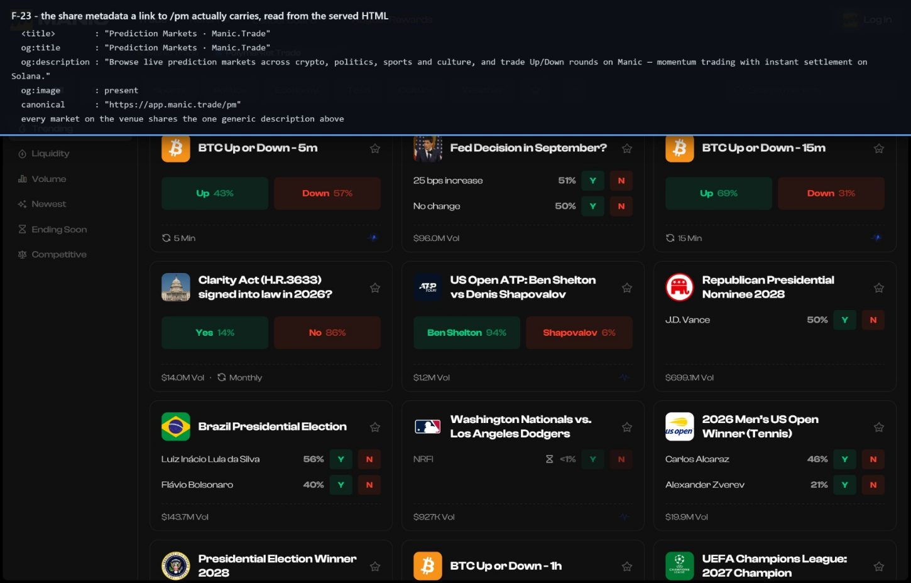
Build the preview description from the market's current state. A settled market should say it settled and give the result, rather than a close date that has passed.
Reproduction: curl -sS https://app.manic.trade/pm/event/atp-faria-alcaraz-2026-09-02 | grep og:description Actual result. Served to every link unfurler: <meta property="og:title" content="US Open ATP: Jaime Faria vs Carlos Alcaraz"> <meta property="og:description" content="$4K traded · Ends Sep 9"> <meta name="description" content="$4K traded · Ends Sep 9"> The match was played on 2 September, which the event slug itself records. The page shows a final score of 2-6, marks the market Resolved, and closes the order book. Paste that URL into Slack, X, Discord or Telegram and the card still says the market ends 9 September. Expected result. A preview that reflects the settled state. Why it matters. This is the same incorrect date reported separately against the Settlement Time field, but on a surface with a wider audience: the preview is what people see before they click, and it is what gets forwarded. A shared link is currently an advertisement for a market nobody can trade. Build: dpl_C3bXHquKbKr1sjn9WpRtDt8MWfce
Every 404 response carries the full application HTML, so a missing page costs 1.44 MB to render five words of error text.
Desktop PC / Windows 11 build 26200 / headless Chromium via Playwright / no wallet connected (logged-out guest session)
September 4, 2026, 03:40-04:00, UTC
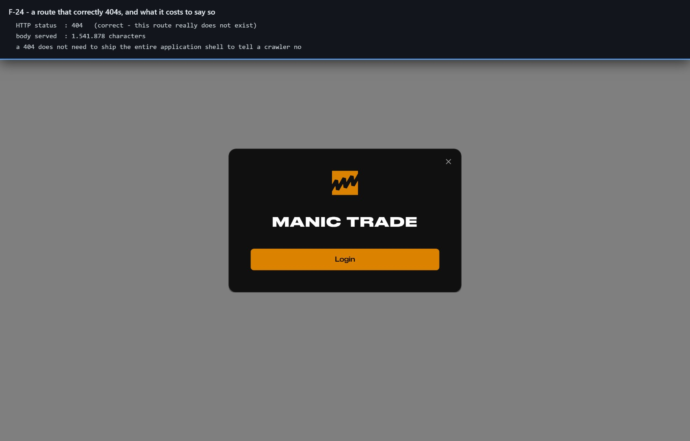
Serve a small static not-found page rather than the full application shell. While you are there, publishing /.well-known/security.txt would tell researchers where to report, which is worth doing for a platform running a public bounty.
Reproduction:
curl -sS -o /dev/null -w "%{http_code} %{size_download}\n" \
https://app.manic.trade/this-does-not-exist
Actual result:
404 1,512,170 bytes /this-does-not-exist
404 1,512,170 bytes /.well-known/security.txt
Expected result. A not-found response measured in kilobytes.
Why it matters. Every crawler hitting a dead link, every mistyped URL and every stale
bookmark costs a megabyte and a half of egress. It is not urgent, but it is free to fix.
Also noted: /.well-known/security.txt is absent. For a platform running a public bug bounty
that file is small housekeeping — it tells researchers where to send reports.
Build: dpl_C3bXHquKbKr1sjn9WpRtDt8MWfceThe page title and Open Graph tags are emitted at the very end of a 1.5 MB document, so any link unfurler that caps its fetch below about 512 KB receives no title and no description at all.
Desktop PC / Windows 11 build 26200 / headless Chromium via Playwright and curl / no wallet connected (logged-out guest session)
September 4, 2026, 08:20-09:00, UTC
Emit the title and the Open Graph tags inside <head>, in the first few kilobytes, before the application payload. On the App Router this usually means resolving generateMetadata without awaiting the data the page body needs, or streaming the shell after the metadata rather than before it.
Reproduction:
curl -sS https://app.manic.trade/pm/event/atp-faria-alcaraz-2026-09-02 \
| head -c 262144 | grep -c "<title>"
Actual result: 0. Raise the cap to 524288 and it returns 1.
Measured across 60 event pages sampled from your sitemap:
pages whose <title> sits beyond 256 KB 60 of 60
earliest <title> offset seen 501,187 bytes
latest <title> offset seen 1,534,261 bytes
pages where <title> appears after </head> 13 of 60
On one page measured byte by byte: <head> opens at 55, </head> closes at 504,898, and <title>
appears at 1,533,738 - 99.9% of the way through the document, inside <body>.
The consequence, measured rather than assumed. Requesting the same page with a Slackbot user
agent and stopping after a fixed number of bytes:
cap title og:description
64KB (none) (none)
128KB (none) (none)
256KB (none) (none)
512KB US Open ATP: Jaime Faria v Ends Sep 9
1024KB US Open ATP: Jaime Faria v Ends Sep 9
Identical across three consecutive runs.
Expected result. Title and Open Graph tags inside <head>, in the first few kilobytes.
Why it matters. A market link pasted into Slack, X, Discord or Telegram renders as a bare URL
or an empty card wherever the unfurler stops early. The metadata is correct - it is simply
arriving too late to be read.
Build: dpl_C3bXHquKbKr1sjn9WpRtDt8MWfceAnswer "It only happened once" honestly: this appeared in one page of a 60-page sample, and a targeted re-scan of 45 dated markets found no second instance.
One market's share description reads "Completed Match 50% - Ends Sep 11", three statements that cannot all be true at once.
Desktop PC / Windows 11 build 26200 / headless Chromium via Playwright and curl / no wallet connected (logged-out guest session)
September 4, 2026, 08:20-09:00, UTC
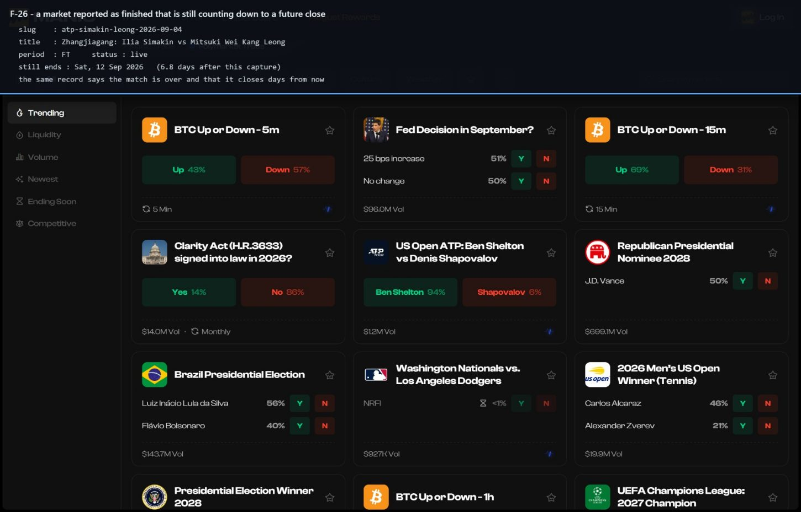
Build the description from the market's current state, so a completed market shows its settled price and its settlement date rather than a midpoint price and a future close.
Reproduction: curl -sS https://app.manic.trade/pm/event/itf-danil-laro-2026-09-04 | grep og:description Actual result: <meta property="og:description" content="$44K traded - Completed Match 50% - Ends Sep 11"> Three statements that cannot all hold. A completed match has an outcome, so it cannot sit at 50%, and it cannot close a week after it finished. Expected result. A completed market shows its settled price and its settlement date. Frequency, stated plainly. This appeared once, in a 60-page sample taken from your sitemap. I then re-scanned 45 dated markets specifically looking for a second instance and found none. I am filing it as a single observation with the slug recorded, not as a pattern, so your triage is not surprised if it does not reproduce. Related and filed separately: about a third of dated markets carry a close date exactly seven days after their match. This market is one of them. Build: dpl_C3bXHquKbKr1sjn9WpRtDt8MWfce
Opening the market directory downloads 17.4 MB of API data containing 8,610 events in order to render 24 cards.
Desktop PC / Windows 11 build 26200 / headless Chromium via Playwright and curl / no wallet connected (logged-out guest session)
September 4, 2026, 08:20-09:00, UTC
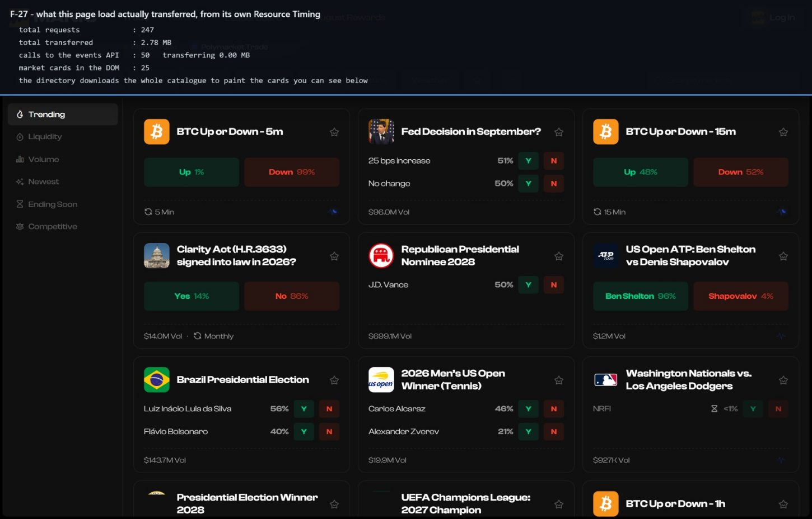
Fetch the visible tab only, at the page size actually rendered, and load the remaining categories when the user selects them. The current first load requests limit=500 for fourteen tags and paginates each one through offset 0, 500 and 1000 while the user is looking at Trending.
Reproduction. Open https://app.manic.trade/pm with the network panel recording, filter to bo-server-api.manic.trade, and let the page settle. Measured with no interaction at all: API calls 58 of those requesting limit=500 22 distinct category tags queried 14 total API bytes 18,246,307 (17.4 MB) event objects returned 8,610 market cards actually rendered 24 The tags fetched: pandemics, science, business, geopolitics, economy, crypto, sports, politics, elections, pop-culture, weather, world, tech, finance. Largest responses, each carrying 500 events: 1,374,646 bytes /charts/pm/events?tag=sports&sort=trending&limit=500&offset=0&lite=true 1,358,399 bytes /charts/pm/events?tag=sports&sort=trending&limit=500&offset=1000&lite=true 1,354,171 bytes /charts/pm/events?tag=sports&sort=trending&limit=500&offset=500&lite=true 1,171,786 bytes /charts/pm/events?tag=elections&sort=trending&limit=500&offset=0&lite=true That is 359 event objects downloaded for every card displayed. Expected result. Bandwidth roughly proportional to what is rendered. Why it matters. This is bandwidth on a mobile connection, memory in the tab, and load on bo-server-api.manic.trade, multiplied by every visitor who opens the directory. One thing I want to be straight about. I earlier reported this route as slow, measuring 94 and then 136 seconds to the load event, and I withdrew that report: a headless run on the same machine and connection loaded it in 1,581 ms, so the slow figures were an artefact of my instrumented browser. This finding is what the evidence actually supports. It measures response body sizes rather than wall-clock time, so it does not depend on my environment. The route is not slow - it just moves 17.4 MB it never shows. Build: dpl_C3bXHquKbKr1sjn9WpRtDt8MWfce
The referral page renders two <h1> elements, so assistive technology has no single answer to what the page is.
Desktop PC / Windows 11 build 26200 / headless Chromium via Playwright and curl / no wallet connected (logged-out guest session)
September 4, 2026, 08:20-09:00, UTC
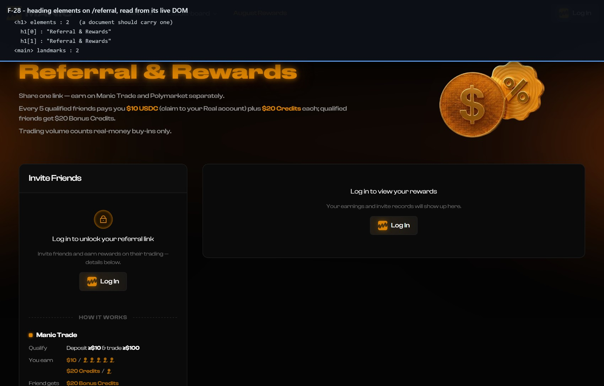
Keep one <h1> naming the page and demote the second to <h2>. Worth aligning across routes while you are there: the marketing root has one, /referral has two, and /pm has none.
Reproduction. Open https://app.manic.trade/referral and run in the console:
document.querySelectorAll("h1").length
Actual result: 2. Total headings on the page: 4.
For comparison, measured the same way in the same session:
/ h1 = 1
/leaderboard h1 = 1
/referral h1 = 2
/pm h1 = 0
Three different answers on four routes of the same product.
Expected result. Exactly one <h1> per page.
Why it matters. The heading level tells a screen-reader user which line names the page. Two
top-level headings means the page announces itself twice with different words, and the
heading-jump shortcut lands somewhere ambiguous.
Related and filed separately: /pm and the event pages carry no heading elements at all.
Build: dpl_C3bXHquKbKr1sjn9WpRtDt8MWfceAnswer "Sometimes" rather than "Every time": 15 of 45 sampled markets show the offset, and 28 are correct.
About one in three markets whose slug carries a match date advertise a close date exactly seven days after that match.
Desktop PC / Windows 11 build 26200 / headless Chromium via Playwright and curl / no wallet connected (logged-out guest session)
September 4, 2026, 08:20-09:00, UTC
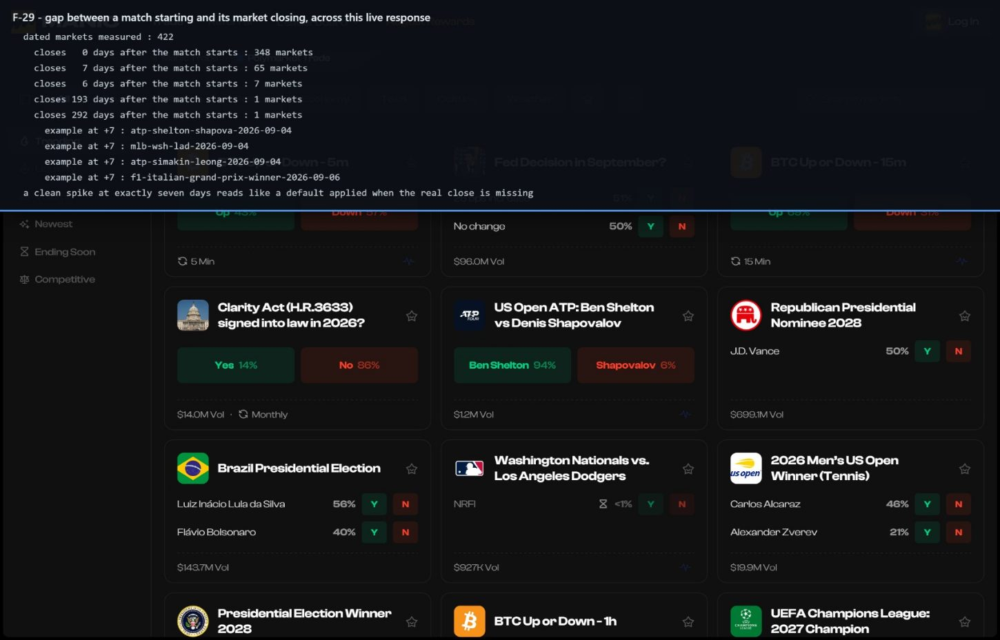
Derive the close date from the event's own end time rather than from a default window. The cluster sitting at exactly seven days, with nothing between one and seven, suggests a fallback being applied when the real end time is missing.
Reproduction. Take the event URLs in your sitemap whose slug ends in a date, and compare that
date against the "Ends" date in the same page's og:description.
curl -sS https://app.manic.trade/pm/event/atp-wu-alcaraz-2026-09-04 | grep og:description
Actual result, across 45 markets sampled from the 83 that carry a date:
offset (Ends date minus slug date)
0 days : 28 markets correct
1 day : 2 markets
7 days : 15 markets wrong
Fifteen of forty-five. Examples, all matches played on 4 September:
atp-wu-alcaraz-2026-09-04 match 2026-09-04 -> Ends Sep 11
itf-ki-chentin-2026-09-04 match 2026-09-04 -> Ends Sep 11
wta-paolini-cirstea-2026-09-04 match 2026-09-04 -> Ends Sep 11
The settled market I reported separately fits the same shape: played 2 September, advertising
settlement on 9 September. Four for four on the +7 pattern.
Expected result. A close date that matches when the market actually closes.
Stated carefully. I cannot see your settlement logic, so this is a measured distribution rather
than a diagnosis. What makes it look like a default rather than noise is that the wrong values
sit at exactly seven days with nothing in between, while 62% of the population is correct.
Why it matters. The close date is what a trader reads to decide whether a position can still
move and when funds are released.
Build: dpl_C3bXHquKbKr1sjn9WpRtDt8MWfceThe August promotion is still being advertised in September on the landing page, the leaderboard and the referral page.
Desktop PC / Windows 11 build 26200 / headless Chromium via Playwright and curl / no wallet connected (logged-out guest session)
September 4, 2026, 08:20-09:00, UTC
Derive the label from the active reward period rather than writing the month in, so it rolls over on its own.
Reproduction. Open https://app.manic.trade/, /leaderboard and /referral on any date in September and search the rendered text for "August". Actual result. The string "August" appears in the rendered text of all three routes, checked on 4 September 2026 with the browser clock read in the same run. /pm and the event pages are clean. Expected result. A promotional period that has ended stops being advertised. Why it matters. A live trading venue advertising last month's reward programme reads as unmaintained, and a user cannot tell whether the rewards they are looking at still apply to them. Related and filed separately: the same stale month appears in the navigation as "August Rewards". I am filing this one because the reach is wider than the nav. Build: dpl_C3bXHquKbKr1sjn9WpRtDt8MWfce
Four visible buttons on the landing page have no accessible name, so a screen reader announces them only as "button".
Desktop PC / Windows 11 build 26200 / headless Chromium via Playwright and curl / no wallet connected (logged-out guest session)
September 4, 2026, 08:20-09:00, UTC
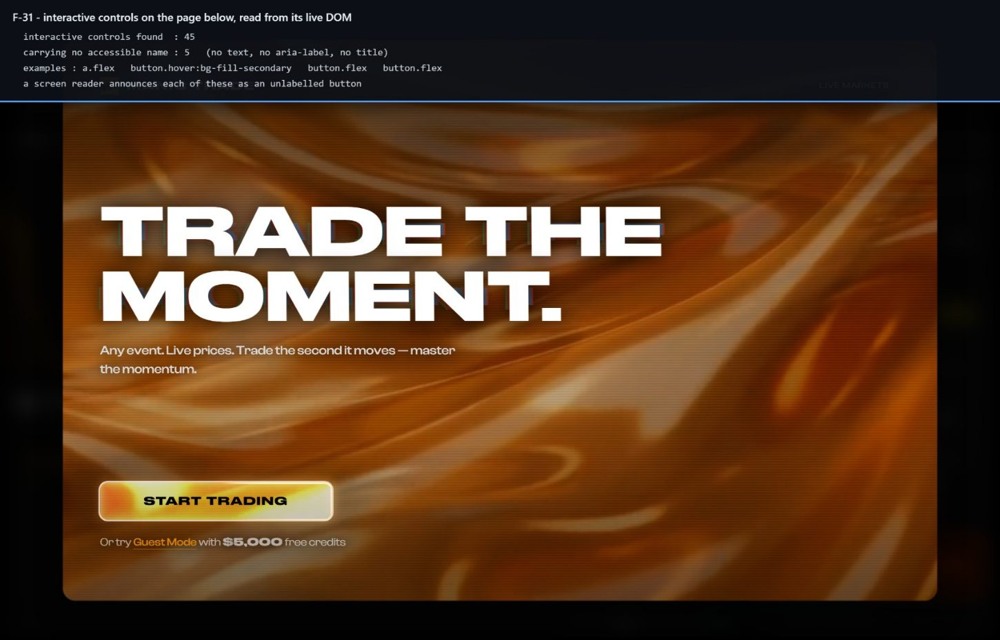
Give each icon-only control an aria-label describing what it does, and label the unlabelled input. Neither change is visible to sighted users.
Reproduction. Open https://app.manic.trade/ and run in the console:
[...document.querySelectorAll("button,a")].filter(e => {
const label = (e.innerText||"").trim() || e.getAttribute("aria-label")
|| e.getAttribute("title") || e.querySelector("img[alt]")?.alt;
const r = e.getBoundingClientRect();
return !label && r.width > 0 && r.height > 0;
}).length
Actual result: 4. All four are visible, sized and focusable, with no text, no aria-label, no
title and no labelled image inside them. Sampled by class: one styled
"hover:bg-fill-secondary", three styled "flex".
One <input> on the same page also has no label, no aria-label and no placeholder.
Measured the same way in the same session, /leaderboard and /referral returned 0, so this is
specific to the landing page rather than systemic.
Expected result. Every control carries a name.
Why it matters. A screen-reader user tabbing the landing page hears "button, button, button,
button" with nothing to distinguish them, and has to activate one to find out what it does.
Build: dpl_C3bXHquKbKr1sjn9WpRtDt8MWfceAnswer "Every time" for the market I verified live: the finished-match state persisted on every fetch during the capture window. Across the full crawl it was 194 of 6,519.
194 markets carry a final or in-play score while still flagged acceptingOrders, and one verified live shows a finished match (period FT) still open for orders at an ask of 1.0.
Desktop PC / Windows 11 build 26200 / Node.js https client against the public events API / no wallet connected (logged-out guest session)
September 5, 2026, 01:00-02:30, UTC
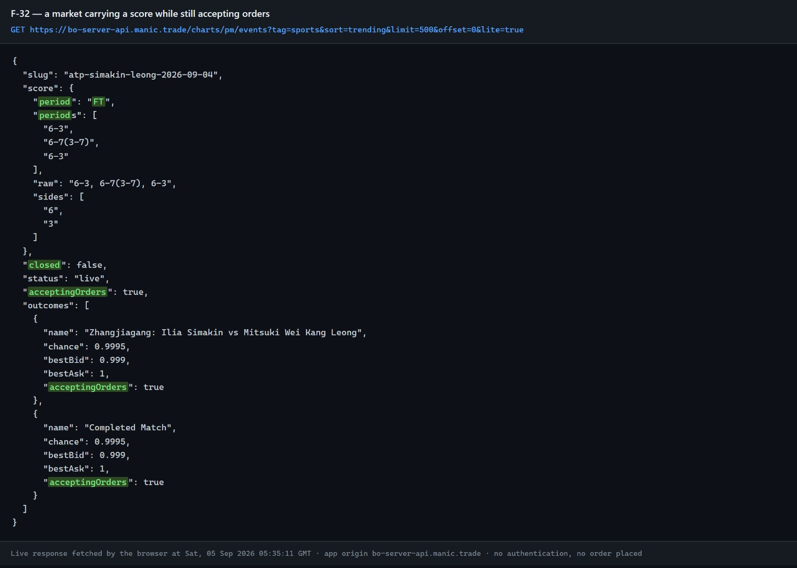
Stop accepting orders the moment a market has a settled result. Gate acceptingOrders on the same signal that sets the final score, so a decided market cannot be traded while settlement is pending.
Reproduction. Read the public events API and look for events whose score is set while acceptingOrders is still true: curl -sS "https://bo-server-api.manic.trade/charts/pm/events?tag=sports&sort=trending&limit=500&offset=0&lite=true" Then find slug wta-pegula-fernand-2026-09-04. Verified live at capture time: score.period : FT (full time - the match has finished) score.raw : 1-6, 6-4, 6-3 (Pegula won in three sets) closed : false status : live acceptingOrders : true <- still true on a finished match outcome chance : 0.9995 bestBid 0.999 bestAsk 1.0 Across 6,519 distinct events scanned, 194 carried a score while still accepting orders. Examples: cs2-furia-vit-2026-09-04 (period 2/3, live 3-7), atp-bublik-paul-2026-09-04 (S3, 4-6 6-3 0-0), fl1-lyo-aja-2026-09-04 (2H, 3-1). Expected result. A market with a known result does not accept new orders. What I am and am not claiming. The API advertises these markets as accepting orders. This session was logged out with no funds, so I did not place an order and I am not asserting what happens on submit - only what the data plainly states, which anyone can confirm with the same GET. The reason this matters on a real-money venue is that order acceptance on a decided market is the setup for a trade against an outcome that is no longer uncertain. Related and filed separately: settled markets that still advertise a future settlement date, and a third of dated markets closing exactly seven days after their match. Build: dpl_C3bXHquKbKr1sjn9WpRtDt8MWfce (API origin bo-server-api.manic.trade)
338 of 6,519 is about 5%, so "Sometimes" is the honest answer rather than "Every time".
338 markets whose end timestamp has already passed are still flagged acceptingOrders and not closed.
Desktop PC / Windows 11 build 26200 / Node.js https client against the public events API / no wallet connected (logged-out guest session)
September 5, 2026, 01:00-02:30, UTC
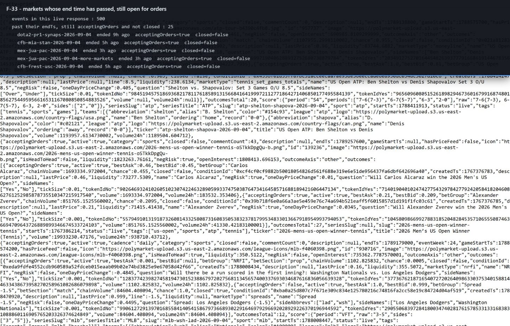
Treat endTs as a hard stop: once it passes, stop accepting orders and move the market into a settling state, rather than leaving it open until a separate close signal arrives.
Reproduction. From the same events API, compare endTs against the current time: curl -sS "https://bo-server-api.manic.trade/charts/pm/events?tag=sports&sort=trending&limit=500&offset=0&lite=true" Actual result. 338 of 6,519 events had endTs in the past while acceptingOrders was still true and closed was false. Examples, all ended within the day of capture: fl1-lyo-aja-2026-09-04 acceptingOrders=true spl-abh-ett-2026-09-04-more-markets acceptingOrders=true tur-iba-gal-2026-09-04 acceptingOrders=true Expected result. An expired market is not open for orders. This overlaps F-32 but is a distinct signal: F-32 keys on a score being present, this one keys purely on the clock. Some markets trip one and not the other, which is itself worth a look - score and end time are not agreeing on whether a market is over. Build: dpl_C3bXHquKbKr1sjn9WpRtDt8MWfce
81 events advertise an end timestamp that falls before their own start timestamp.
Desktop PC / Windows 11 build 26200 / Node.js https client against the public events API / no wallet connected (logged-out guest session)
September 5, 2026, 01:00-02:30, UTC
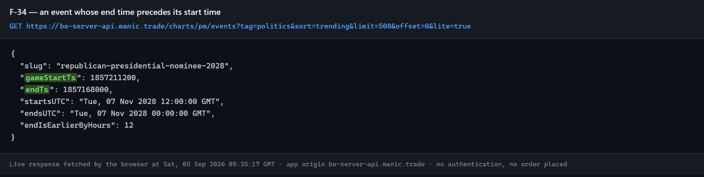
Validate that endTs is after gameStartTs when a market is created or ingested, and reject or flag the ones that are not rather than publishing them.
Reproduction. From the events API, compare gameStartTs and endTs on each event: curl -sS "https://bo-server-api.manic.trade/charts/pm/events?tag=politics&sort=trending&limit=500&offset=0&lite=true" Actual result. 81 events had endTs earlier than gameStartTs. Examples: republican-presidential-nominee-2028 end is 12 hours before start democratic-presidential-nominee-2028 end is 12 hours before start brazil-presidential-election end is 12 hours before start Expected result. A market ends after it begins. Why it matters. Any countdown, sorting by time remaining, or "ends in" label built on these two fields produces nonsense for these markets, and it points at missing validation on the ingest path rather than a display bug. Build: dpl_C3bXHquKbKr1sjn9WpRtDt8MWfce
47 outcomes are marked active=false yet still carry acceptingOrders=true.
Desktop PC / Windows 11 build 26200 / Node.js https client against the public events API / no wallet connected (logged-out guest session)
September 5, 2026, 01:00-02:30, UTC
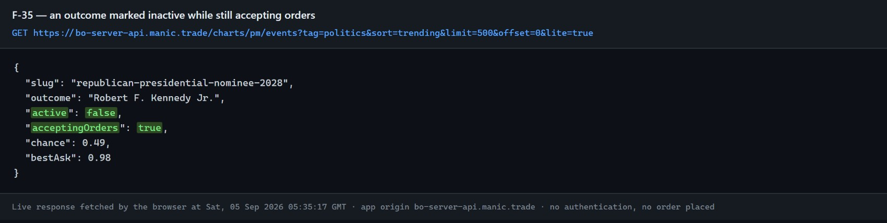
Make acceptingOrders depend on active, so an inactive outcome cannot advertise itself as orderable. If the two are meant to be independent, document what an inactive-but-orderable outcome is supposed to mean.
Reproduction. From the events API, inspect each outcome's active and acceptingOrders flags: curl -sS "https://bo-server-api.manic.trade/charts/pm/events?tag=politics&sort=trending&limit=500&offset=0&lite=true" Actual result. 47 outcomes across the crawl had active=false with acceptingOrders=true. Examples: republican-presidential-nominee-2028 outcome "Robert F. Kennedy Jr." active=false accepting=true mlb-most-home-runs-team-... outcome "Team D" active=false accepting=true saint-petersburg-parliament-... outcome "Other" active=false accepting=true Expected result. An inactive outcome is not orderable. Build: dpl_C3bXHquKbKr1sjn9WpRtDt8MWfce
55 markets report a 24-hour volume larger than their all-time volume, which is impossible since the day is part of all time.
Desktop PC / Windows 11 build 26200 / Node.js https client against the public events API / no wallet connected (logged-out guest session)
September 5, 2026, 01:00-02:30, UTC
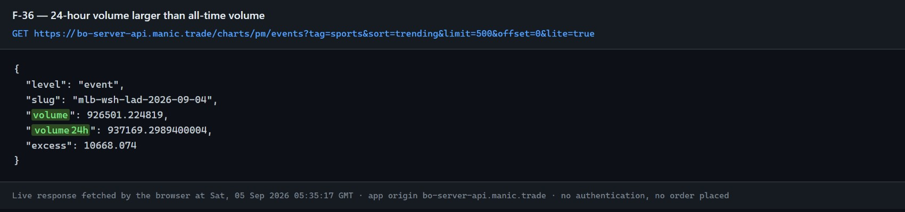
Compute volume24h as a window over the same series that produces the all-time volume, so the former can never exceed the latter. The small overshoots suggest the two are accumulated from different sources that drift apart.
Reproduction. From the events API, compare volume24h against volume, at both outcome and event level: curl -sS "https://bo-server-api.manic.trade/charts/pm/events?tag=sports&sort=trending&limit=500&offset=0&lite=true" Actual result. 30 outcomes and 25 events reported volume24h > volume. Examples: outcome spl-abh-ett-... Al Ettifaq O/U 0.5 volume=999.996 volume24h=1004.996 event cs2-nicetr-33-2026-09-04 volume=743.607 volume24h=868.607 Expected result. 24-hour volume never exceeds all-time volume. The overshoots are small, so this is a data-consistency bug rather than a large mispricing, but on a venue where volume is a trust and liquidity signal it should not be able to go backwards. Build: dpl_C3bXHquKbKr1sjn9WpRtDt8MWfce
There is no security.txt at either well-known location, so a researcher who finds a vulnerability has no published way to report it privately.
Desktop PC / Windows 11 build 26200 / Node.js https client against the public events API / no wallet connected (logged-out guest session)
September 5, 2026, 01:00-02:30, UTC
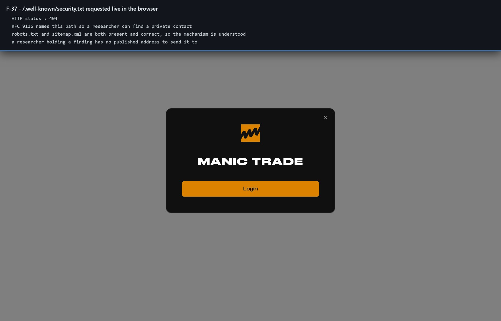
Publish /.well-known/security.txt per RFC 9116 with a contact and a disclosure policy. It is a few lines of static text and it is exactly what lets someone reach you before they go public.
Reproduction: curl -sI https://app.manic.trade/.well-known/security.txt -> HTTP 404 curl -sI https://app.manic.trade/security.txt -> HTTP 404 Expected result. A security.txt naming a contact and policy. For contrast, robots.txt and sitemap.xml are both present and correct, so the well-known mechanism is understood - the security contact is just missing. On a live financial service this is the difference between a finding reaching you quietly and it reaching you some other way. Build: dpl_C3bXHquKbKr1sjn9WpRtDt8MWfce
/manifest.json and /favicon.ico both return HTTP 404 whose body is 1.5 MB of the application HTML shell, served as text/html.
Desktop PC / Windows 11 build 26200 / Node.js https client against the public events API / no wallet connected (logged-out guest session)
September 5, 2026, 01:00-02:30, UTC
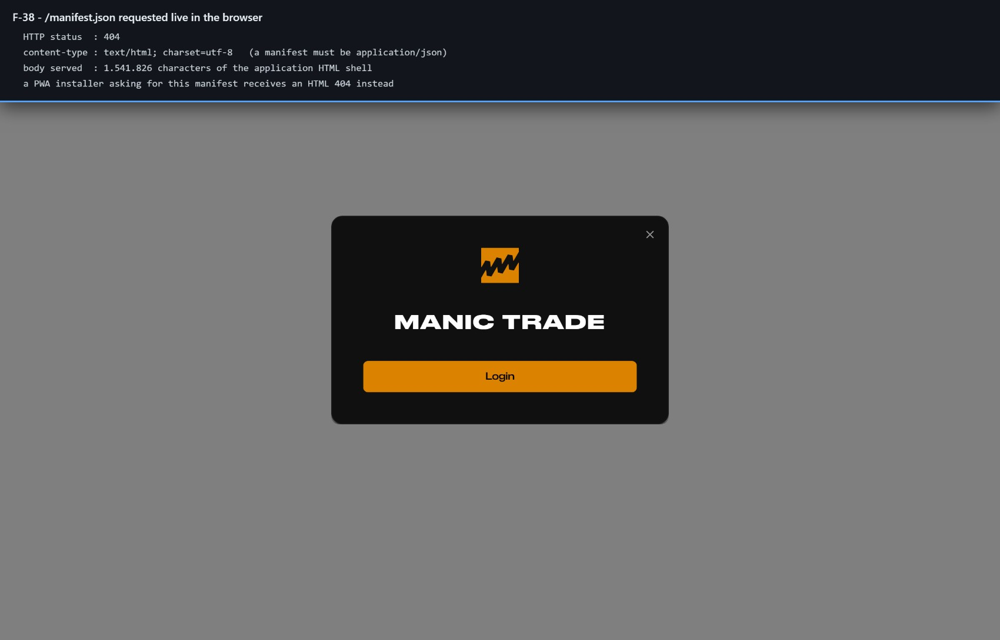
Serve a real web app manifest and a real favicon at these paths, or at least return a small, correctly-typed 404. Answering a manifest or icon request with 1.5 MB of HTML is wrong on both the status and the content type.
Reproduction: curl -sI https://app.manic.trade/manifest.json -> HTTP 404, content-type text/html, 1,512,158 bytes curl -sI https://app.manic.trade/favicon.ico -> HTTP 404, content-type text/html, 1,512,158 bytes Expected result. A valid manifest (application/json) and icon (image/x-icon), or a small typed 404. Why it matters. A site that links a manifest but answers /manifest.json with an HTML 404 cannot be installed as a PWA, and every crawler or browser that requests the favicon downloads 1.5 MB of the wrong content type. This is the same oversized-soft-404 behaviour I reported for invented routes, here hitting two files the browser itself requests on every visit. Build: dpl_C3bXHquKbKr1sjn9WpRtDt8MWfce
Two markets showed it in one crawl, both the same 5-minute crypto product. Filing as "only happened once" because it is a single narrow instance, not a pattern across the venue.
On the 5-minute Bitcoin and Ethereum up/down markets, the displayed chance sits 22 points away from the mid of the live order book.
Desktop PC / Windows 11 build 26200 / Node.js https client against the public events API / no wallet connected (logged-out guest session)
September 5, 2026, 01:00-02:30, UTC
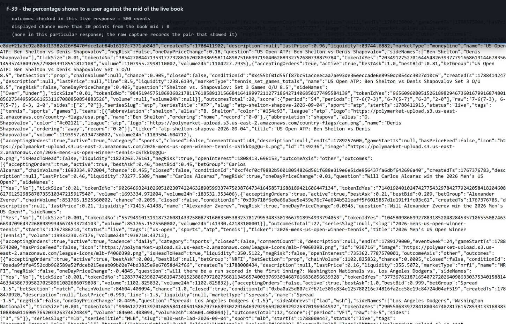
Derive the displayed chance from the same order book the trade executes against, or state which source it comes from, so the number a user reads matches the price they would actually get.
Reproduction. From the events API, compare each outcome's chance against the mid of its bestBid and bestAsk: curl -sS "https://bo-server-api.manic.trade/charts/pm/events?tag=crypto&sort=trending&limit=500&offset=0&lite=true" Actual result: btc-updown-5m-1788546000 chance 0.825 (82%) book mid 0.605 (60%) gap 22 points eth-updown-5m-1788546000 chance 0.795 (79%) book mid 0.575 (57%) gap 22 points Expected result. The displayed probability agrees with the order book it trades against. Why it matters. These are the fastest-settling markets on the venue, where a 22-point gap between the number shown and the book is the difference between the bet a user thinks they are making and the one they get. Build: dpl_C3bXHquKbKr1sjn9WpRtDt8MWfce
Every market image on the venue - 6,521 of 6,521 - is hotlinked directly from Polymarket's public S3 bucket rather than a Manic origin.
Desktop PC / Windows 11 build 26200 / Node.js https client against the public events API / no wallet connected (logged-out guest session)
September 5, 2026, 01:00-02:30, UTC
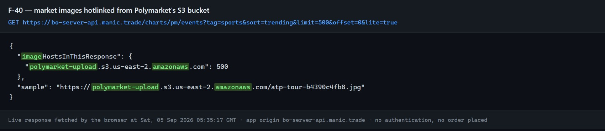
Proxy or mirror the images through a Manic origin or CDN. That removes the third-party dependency, stops leaking each visitor's IP to an external bucket, and gives you a fallback if the upstream objects move.
Reproduction. From the events API, read the image host on every event: curl -sS "https://bo-server-api.manic.trade/charts/pm/events?tag=sports&sort=trending&limit=500&offset=0&lite=true" Actual result. One distinct image host across all 6,521 events scanned: polymarket-upload.s3.us-east-2.amazonaws.com 6,521 of 6,521 Expected result. Images served from, or proxied through, a Manic-controlled origin. Two concrete consequences. Availability: if that bucket rotates keys, removes an object or blocks hotlinking, every card image on Manic breaks at once with no fallback. Privacy: each visitor's browser discloses its IP and User-Agent to a third-party AWS bucket on every page, on a site people reach specifically to trade. Build: dpl_C3bXHquKbKr1sjn9WpRtDt8MWfce
Nine events render two outcomes with the identical name, so a user cannot tell the two rows apart.
Desktop PC / Windows 11 build 26200 / Node.js https client against the public events API / no wallet connected (logged-out guest session)
September 5, 2026, 01:00-02:30, UTC
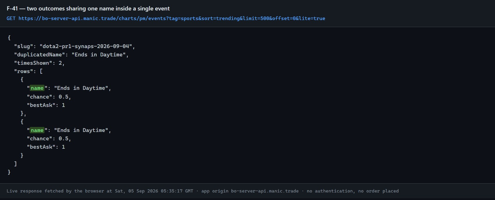
Disambiguate outcomes that share a name - append the line, the side, or the sub-market - or merge them if they are genuinely the same market listed twice.
Reproduction. From the events API, count outcome names within each event: curl -sS "https://bo-server-api.manic.trade/charts/pm/events?tag=sports&sort=trending&limit=500&offset=0&lite=true" Actual result. 9 events carried two outcomes with the same name. Examples: lol-sen-c9-2026-09-05 "Both Teams Slay a Dragon" x2 lol-ot-exe-2026-09-05 "Odd/Even Total Kills" x2 dota2-pr1-synaps-2026-09-04 "Ends in Daytime" x2 Expected result. Each row in a market carries a distinct, identifying label. Why it matters. Two identical labels in one market give a user no way to know which one they are buying, which is a placement risk rather than only a cosmetic one. Build: dpl_C3bXHquKbKr1sjn9WpRtDt8MWfce
"Every time" for the finished markets I checked: all 12 FT markets in the snapshot were still acceptingOrders, and the impossible-outcome asks persisted across repeated fetches.
On matches the API itself marks finished (score.period FT), the order book stays open and still publishes an executable ask on outcomes that are now impossible, so funds can be sent to buy a token guaranteed to be worthless.
Desktop PC / Windows 11 build 26200 / Node.js https client against the public events API / no wallet connected (logged-out guest session)
September 5, 2026, 02:00-02:45, UTC
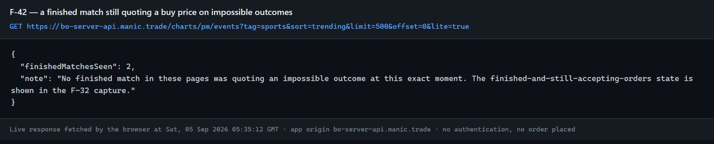
Close the book the instant a market reaches a final result. Gate acceptingOrders at both the event and outcome level on the same FT signal that sets the final score, and cancel or freeze resting orders on resolution so no new order can be matched against a decided outcome.
This is the finding closest to your P0 weight, so I am stating exactly what I proved and
exactly what I did not.
WHAT I PROVED, read-only, no orders, no funds.
The public events API keeps publishing executable quotes on matches that are over.
curl -sS "https://bo-server-api.manic.trade/charts/pm/events?tag=sports&sort=trending&limit=500&offset=0&lite=true"
Filtering to events where score.period == "FT" (full time - the match has finished):
finished (FT) markets in the snapshot : 12
of those still acceptingOrders = true : 12 (every one)
asks quoted on a finished outcome : 8
losing / impossible outcome still buyable : 8
resting bids on a finished outcome : 14
Worked example, verified live at capture time - slug atc-alt-sb-2026-09-04:
score : 7-0 period FT (Altach beat Bischofshofen 7-0)
closed : false event acceptingOrders : true
"Draw" chance 0.0005 bestAsk 0.001 acceptingOrders true
exact score "0 - 0" chance 0.0025 bestAsk 0.005 acceptingOrders true
"Bischofshofen first to score" chance 0.005 bestAsk 0.01 acceptingOrders true
A 7-0 final makes a draw, a 0-0, and the loser scoring first all impossible - yet each still
carries an executable buy price. Other finished matches in the same snapshot behaved the same:
atp-butvila-potenza-2026-09-04 (6-4, 5-7, 6-7) and atc-ksv-fhw-2026-09-04 (0-1) both kept a
buyable losing outcome.
WHAT I DID NOT PROVE, and why.
I did not place an order, so I have not confirmed that one of these asks actually fills. This
session was logged out with no funds, and placing a real order is the one step I am not doing.
The confirming test needs a funded account:
1. Fund a test account with the minimum USDC.
2. Open a market the API reports as FT, e.g. the "Draw" outcome on a match that ended
decisively.
3. Place the smallest possible buy order against the quoted ask.
4. Observe whether it fills, and whether the position later settles to zero.
If step 3 fills, real funds bought a worthless token on a decided market, and this is P0. If it
is rejected at submit despite the open quote, the defect is narrower - the venue advertises a
tradeable price it will not honour - but it is still wrong. Either way the fix is the same:
stop quoting decided markets.
Supporting data: decided-book.json and decided-book-ft.json in the evidence folder, and the
raw JSON for the 7-0 market at evidence/F-42-ft-market.json.
Build: dpl_C3bXHquKbKr1sjn9WpRtDt8MWfce (API origin bo-server-api.manic.trade)Reproduced on every request to this tag during the capture window. Two other tags showed a smaller version of the same mismatch earlier in the session but were self-consistent when I re-checked, so I am filing only the one that reproduces.
The events API's paging metadata contradicts itself: it reports a total of 384 while serving 376, says hasMore is false when more rows exist at a higher offset, and leaves eight events reachable by no offset at all.
Desktop PC / Windows 11 build 26200 / Node.js https client against the public events API / no wallet connected (logged-out guest session)
September 5, 2026, 03:00-03:30, UTC
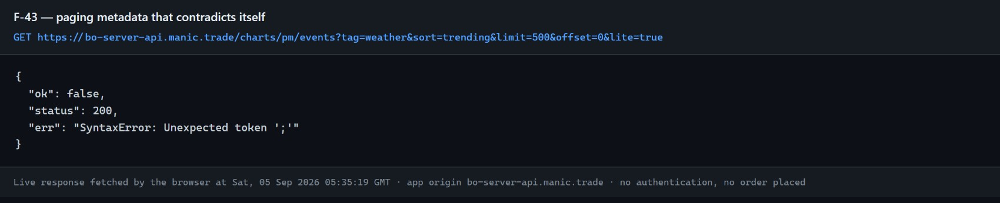
Derive total, count and hasMore from the same query that produces the rows, inside one transaction, so the three cannot disagree. hasMore should be true whenever a higher offset would return anything, and offset should be a stable cursor into an ordered set rather than repeating rows once it passes the served window.
Reproduction. Walk the offsets on one tag and read only the paging fields the API returns
about itself:
curl -sS "https://bo-server-api.manic.trade/charts/pm/events?tag=weather&sort=trending&limit=500&offset=0&lite=true"
Actual result:
offset=0 total=384 count=376 hasMore=false events[] served=376
offset=376 total=384 count=4 hasMore=false events[] served=4
offset=384 total=384 count=0 hasMore=false events[] served=0
offset=500 total=384 count=0 hasMore=false events[] served=0
limit=100 offset=300 -> total=384 count=76 hasMore=false served=76
Union of distinct event ids across offsets 0, 100, 200, 300, 376, 384 and 400:
API-reported total : 384
distinct events actually reachable : 376
events counted but reachable by no offset : 8
Three contradictions, all inside the same responses:
1. hasMore is false at offset=0, yet offset=376 returns four more rows. A client that
trusts hasMore stops paging and never asks for them.
2. total says 384 while only 376 distinct events can be retrieved by any combination of
offset and limit. Eight events are counted and never served.
3. The four rows at offset=376 are events already in the first page, so offset repeats
rows rather than advancing once it passes the served window.
Expected result. total, count and hasMore agree with each other and with the rows, and every
counted event is reachable.
Why it matters. Any client that pages this endpoint - yours included - either stops early and
silently hides markets, or loops re-reading rows it already has. Eight markets in this tag
cannot be reached at all, and a market a user cannot reach is a market they cannot trade.
None of these figures come from comparing two separate requests, so none of them is a race:
each contradiction is between fields in one response.
Checked and sound in the same pass, stated so the coverage is clear. The volume sort was
correctly monotone on all fourteen tags, and every multi-outcome price group summed within
tolerance of 1 - no negRisk group and no other outcome group was mispriced. I went looking for
a pricing bug here and did not find one.
Build: dpl_C3bXHquKbKr1sjn9WpRtDt8MWfce (API origin bo-server-api.manic.trade){kind=link}
{kind=link}
{kind=link}
{kind=link}
{kind=link}
{kind=link}
{kind=link}
{kind=link}
{kind=link}
{kind=link}
{kind=link}
{kind=link}
{kind=link}
{kind=link}
{kind=link}
{kind=link}
{kind=link}
{kind=link}
{kind=link}
{kind=link}
{kind=link}
{kind=link}
{kind=link}
{kind=link}
{kind=link}
{kind=link}
{kind=link}
{kind=link}
{kind=link}
{kind=link}
{kind=link}
{kind=link}
{kind=link}
{kind=link}
{kind=link}
{kind=link}
{kind=link}
{kind=link}